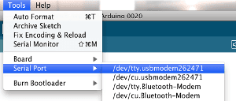

The ProtoSnap - Pro Mini is Co-brand in sparkfun and seeedstudio.It is an Arduino-compatible development platform aimed at teaching the basics of programming as painlessly as possible. It combines a microcontroller development board, a USB programmer, and various inputs and outputs, and wires them all together. So, rather than having to deal with breadboarding or soldering, you can jump straight into the programming. Then, once you feel like you have a good grasp of the Arduino programming language, you can break each piece off for individual use in any project.
This tutorial will provide both an overview of the ProtoSnap Pro Mini, as well as an introduction to Arduino programming. If you've never touched a programming language before, don't fret; this tutorial's especially for you! We're going to be touching a few basic programming concepts in addition to all the Arduino stuff. No matter what your experience level is, you'll be blinking LEDs, acting on button presses, and making all sorts of annoying buzzes in no time!
•1 x Arduino Pro Mini 5V/16MHz
•1 x FTDI Basic Breakout 5V
•1 x Buzzer
•1 x RGB LED
•1 x Light Sensor
•1 x Push Button
•1 x Protoboard
Before we jump into the tutorial though...one little warning:
DON'T BREAK APART THE PROTOSNAP YET!!
It won't work anymore. And I reckon you'll be pretty heartbroken if you can't join in on the fun that will be this tutorial. Now then...
What's a ProtoSnap Pro Mini?
Well, if you're a hardware person, I could answer that question with a schematic:
Wait! Come back! Sorry, if I scared you off. If you want, you can forget I ever showed that to you, because the ProtoSnap Pro Mini is so much more than a schematic. It's a mish-mash of battle-proven pieces of hardware, all combined to work together so you can focus solely on the programming side of Arduino. With just the most basic understanding of the circuit, you can program the ProtoSnap to do everything it's meant to do.
At the forefront of this jumble of pieces is the Pro Mini -- an Arduino compatible development platform, and an almost-carbon-copy of our 5V Arduino Pro Mini. Minus a few bits and pieces, this is really just a miniature, minimalist version of the Arduino Uno, the "standard" version of the Arduino. Though it's just a quarter the size of the Arduino Uno, the Pro Mini can do just about anything its precursor can.
Another major player on the ProtoSnap Pro Mini is the FTDI Basic Breakout. This little board's got a mini-B USB connector on it, which can be connected to a computer via any standard mini-B to A USB cable. The purpose of the FTDI Basic is to translate computer talk (USB) to Arduino talk (serial). We'll mainly use it to program the Pro Mini, but it can also work as a portal of communication between a computer and an Arduino.
Looking to the side opposite the Pro Mini and FTDI Basic, the ProtoSnap includes a few input and output components that represent just a fraction of what an Arduino can be programmed to control. There's an RGB LED (because no design is complete without blinkies), a light sensor, a buzzer, and a momentary push-button. In not too long you'll know how to program the Pro Mini to play with all of these fun little toys.
You may notice each of these boards are kind of oddly labeled with at least one pin number on each board. The numbers on each I/O breakout board are there to indicate which pin of the Arduino the component is wired to. For example the button is tied to digital pin 7, and the light sensor output is tied to analog input 0.
Finally, towards the bottom of the board you'll notice what just looks like just a board with a bunch of holes in it. Well, it is just a board with a bunch of holes in it. But that holy board is also going to be the springboard that will launch you from the comfy confines of the ProtoSnap as you branch out into real prototyping. This is a prototyping board -- a platform where you can solder any variety of electronic components to create a more solidified circuit prototype. This prototyping board's pretty small, as far as perfboards go, but it's a good place to stick at least one more sensor.
Installing Arduino and FTDI Drivers
Almost to the fun stuff! But first up, what can be the most painful part, installing Arduino and the FTDI drivers. Installing Arduino's not actually all that bad; go to the "Download" link on Arduino's website, and scroll down to the platform that suits your computer (if you're on a 64-bit machine, make sure you download the 64bit options!). The downloads actually pretty big (~80MB), so it may take a while to download if you've got a slow connection.
Note: Arduino's become official! Arduino 1.0 was released about a month ago. So now, if you download the most recent version, it'll come in a folder labeled "arduino-1.0". Other than that, installation should follow the same steps below. The UI is a bit different (new color!, different toolbar layout), but all of the example code should still work. (12/20/11)
From here, things get a little dicey. There's a different set of directions for Windows and Mac (and Linux), but I'll try to keep you both happy:
1.Install the Arduino environment
If you're on a Windows machine, unzip the downloaded zip folder to some place you won't forget; C:\Program Files is a good spot, as is the Desktop. As a bonus step for you PCs, you may want to create a shortcut to Arduino on your desktop. Open up the arduino-0022 folder, right click Arduino.exe, and click Send To > Desktop (create shortcut).
For you Macs, simply open up the .dmg file you downloaded (if it didn't automagically), and copy the Arduino application into the applications folder.
2.Plug in the ProtoSnap Pro Mini Finally! First plug the type A connector into your computer, and then snugly connect the mini-B side into the ProtoSnap. The ProtoSnap will be powered immediately by the USB, and, depending on what firmware's on there it even might start blinking some LEDs.
3.Install the FTDI drivers
For Windows people, an Add New Hardware Wizard should open up shortly after the board is plugged in. Skip searching the internet for drivers, and instead select No, not at this time and click "Next".
Then select Install from a list or specified location (Advanced), and again hit "Next". Point the search location to the \drivers\FTDI USB Drivers\ folder within your Arduino install (e.g. C:\Program Files\arduino-0022\drivers\FTDI USB Drivers\).
And click through a few menus to finish the install. Once done, the final window should say something about successfully installing the driver.
For you Macs, the driver installation should be much easier, in fact, all you should need to do is double-click the FTDIUSBSerialDriver_10_4_10_5_10_6.mpkg icon that was included with the download, and follow the instructions in the installer.
4.All set? Or not? If it didn't install successfully, I'd recommend heading over to the FTDI webpage and following their much more detailed instructions for installing the drivers. Other resources include the Arduino's "Getting Started" page, just remember that you're installing drivers for what would be the Arduino Duemilanove, not the Arduino Uno. Sweet, the hard part's over. Now I promise it's on to the fun stuff.
Uploading a Sketch
In the world of embedded electronics, every good development platform has to have an LED; and the first test program to be run on any development platform is almost always blinking of an LED. True to form, the ProtoSnap Pro Mini has more than a few LEDs, one of which is actually on the Pro Mini part of the ProtoSnap. So let's do some blinking!
First, you'll need to open up Arduino. Double click the Arduino program, whether it be a shortcut or the Arduino.ex file in the arduino-0022 folder. That should bring up the world-famous Arduino IDE (short for Integrated Development Environment), and a completely blank sketch. Sketch, by the way, is the Arduino term for program or code. From here we can open up one of the many examples included with Arduino. Go to File > Examples > 1.Basics > Blink which should open up something like this:
Before we can upload Blink to the ProtoSnap Pro Mini, we've got to tell Arduino exactly what our board is and where it is. If you go up to the Tools > Board menu you should see a pretty exhaustive list of all of the possible Arduino boards. You're gonna want to have the top option selected, Arduino Uno.
Next we need to tell Arduino how to talk to the ProtoSnap. Go up to the Tools > Serial Port menu. For Windows users, there should be one or two COM# ports listed. COM1 is usually installed on all computers as the fabled, ancient, hard-wired serial port, if there's another COM port in addition to COM1 select that one. On my computer, the ProtoSnap is COM5, it may be COM2, COM3,..., COM256 on your computer.
For Mac people you should be see something like /dev/tty.usbserial-########. There should only be one (as long as you only have one FTDI board plugged in). Select that.

Now we're ready to upload. Your toolbar menu should look something like this:

Compile takes your sketch and turns it into code that the ProtoSnap can understand. Open and Save are pretty self explanatory. The last two are the buttons you'll be hitting most often. We'll explain Serial Monitor later, but for now, go hit the Upload button. Upload both compiles your sketch, and sends it to the ProtoSnap.
After hitting Upload, quickly glance over to the FTDI Breakout board on your ProtoSnap. You should see the red and green, RX and TX LEDs blink like crazy for a few seconds, and then, finally, you can bask in the glorious green blink of the ProtoSnap.
Not blinking? Did the RX and TX LEDs on the FTDI board not flash like crazy? Did you get an error that looked like below?
If so, the problem could lie in a few different spots:
•You don't have the Board correctly set
The Tools > Board menu should be set to Arduino Uno and only Arduino Uno.
•Serial Port may not be set correctly
If you've got more than one Serial Port listed in the menu, try selecting some of the others.
•Or the drivers didn't install properly
Try unplugging and re-plugging the ProtoSnap in. If it prompts you to install the drivers, try doing so again. If that still fails, I'd recommend shooting an email over to our tech support team.
Well, we've just opened an enormous can of worms, and you've taken your first step into the life-consuming world of Arduino. But we've only just begun, so strap in, and let's delve into some code!
If you've made it this far, breathe a deep sigh of relief. Getting that first sketch to load is always the hardest part. It's all downhill from here. This is probably a good spot to take a breather. From here we'll be loading all sorts of new sketches to the Arduino Pro Mini, getting it to work with each of its neighboring boards.
There's a big jump in content level here. While, before we were just getting the Arduino environment up-and-running and loading an example sketch, now we're jumping straight into example code. Most of the programming here is pretty basic, but if you've never programmed before, it's gonna look pretty foreign to you. Try to follow along, recognize the patterns, and if you have any questions about any of the functions, look them up in Arduino's excellent reference documentation. Let's have some fun!
Pairing Input with the Output - Using the Button
For every yin there's a yang, every spark there's some fun, and for every digitalWrite() there's a digitalRead(). The Blink sketch uses digitalWrite() to turn the LED on or off, and in between that blinking it just sticks in a delay() to pause a moment. But wouldn't it be nice to make the LED react to your every whim? Maybe turn it on when you press the ProtoSnap's button, and off when you release the button? Open up a new sketch (File > New), and copy the code below into it. It should upload to the ProtoSnap with no errors reporting.
int buttonPin = 7; // button is connected to pin 7
int ledPin = 13; // LED's connected to pin 13
int buttonStatus; // variable we'll use to store the button's status
void setup() {
pinMode(buttonPin, INPUT); // Initialize the buttonPin as input
pinMode(ledPin, OUTPUT); // The LED is an output
}
void loop() {
/* First read the status of the button
HIGH = button is NOT pressed
LOW = button IS pressed */
buttonStatus = digitalRead(buttonPin);
if (buttonStatus == LOW) {
digitalWrite(ledPin, HIGH); // If the button's pressed turn the LED on
}
else {
digitalWrite(ledPin, LOW); // Otherwise, turn the LED off
}
}
After uploading, there's no real indication that the ProtoSnap is doing anything, but give the button a try... Bam! Light!
So how's it work? Remember the button is connected to pin 7 of the ProtoSnap Pro Mini. We're using digitalRead() to read the status of the button. It'll either read HIGH (5V) or LOW (0V). If it reads HIGH, then that means the button is not being pressed. While a LOW indicates that the button is being pressed.
Spicing up Blink - Using the RGB LED Well, we're plenty familiar with the ProtoSnap Pro Mini's boring little green LED, how about we get to doing some tri-color LED blinking? Three pins are used by the Pro Mini to control the RGB LED, one for each color:
RGB LED to Pro Mini pin map Arduino Pin RGB LED Color 5 Green 6 Blue 3 Red
Remember that those numbers are also printed on the ProtoSnap, if you need another reminder.
If you have the last sketch open still, try changing the ledPin variable at the top of the sketch to one of the RGB LED pin numbers (replace 13 with either 3, 5, or 6). Voila! You should be blinking one of the the RGB LED colors now! Try blinking each color of the RGB LED individually, make sure they all work.
Do you notice any difference between the blinking of the RGB LED, as opposed to that of the little on-board LED? Is it working...backwards? The RGB LED is wired up in a way that it works opposite to the little green Pro Mini LED. When you digitalWrite() the little green LED HIGH, it turns the LED on, while writing it LOW turns it off. The RGB LED works in the opposite way: digitalWrite()'ing HIGH turns the LED off, writing it LOW turns it on.
But digitalWrite() is pretty boring, right? You've only got two options...on or off. What if we want varying levels of light...how about 255 levels? Let's try using the analogWrite() function, which uses PWM to turn the LED on, off, or anywhere in between.
int redPin = 3; // red RGB LED
int greenPin = 5; // green RGB LED
int bluePin = 6; // blue RGB LED
void setup() {
/* set all LED pins as outputs */
pinMode(redPin, OUTPUT);
pinMode(greenPin, OUTPUT);
pinMode(bluePin, OUTPUT);
analogWrite(redPin, 0); // Turn the red LED all the way on
analogWrite(greenPin, 255); // Turn green fully off
analogWrite(bluePin, 220); // turn blue sort-of on
}
void loop() {
/* We'll use for loops to cycle the brightness of the red LED */
/* First turn the red LED from all the way on to fully off,
and everywhere in between */
for (int brightness=0; brightness<=255; brightness++) {
analogWrite(redPin, brightness);
delay(5); // delay a bit for visibility
}
/* Then turn the red LED from off back to on, and everywhere
in between */
for (int brightness=255; brightness>=0; brightness--) {
analogWrite(redPin, brightness);
delay(5); // delay a bit for visibility
}
}
You may have to shield your eyes, the RGB LED can get really bright! Can you see the really dim blue LED? Is the pulsing red LED giving you seizures yet? With the analogWrite() function, and an RGB LED, you can bend the three colors to your will, and create just about any color in the spectrum. All three colors fully on? You got white. Just red and blue...purple! Try mixing the colors, see what you can make.
A different kind of input - Using the Light Sensor Just as digitalWrite()'s got digitalRead(), analogWrite() has its own...analog: analogRead()! Rather than returning the unexciting on or off, analogRead() can output 1024 possible values! 0, 1023, or anywhere in between. The value reported by analogRead() represents a voltage -- 0 is 0V, 1023 is 5V, 512 is 2.5V and so on -- on a linear scale.
Because the ProtoSnap Pro Mini's light sensor produces a variable output voltage, we can use analogRead() to read it. Let's throw some more example code at the Arduino!
int lightPin = A0; // Light sensor's connected to analog pin 0
int lightReading; // variable we'll use to store light sensor reading
void setup() {
/* start up serial at 9600 baud, and print a welcome message */
Serial.begin(9600);
Serial.println("Hello world, let's read some light sensors!");
}
void loop() {
lightReading = analogRead(lightPin); // read the light sensor
Serial.println(lightReading, DEC); // print the sensor reading
delay(250); // delay a bit for readability
}
After uploading that code to the Arduino, you're probably not going to see it do anything. Time to introduce the Serial Monitor! On the far right of the Arduino's toolbar, you should see a button labeled Serial Monitor. Click it!
Make sure the drop down menus look like the picture above, specifically make sure the baud rate is set to 9600. The serial monitor is where we output all sorts of stuff that's hard to display on LEDs. This sketch is reporting the values that the light sensor is reading. Cover up the sensor and you should see values at or near 0. Shine a flashlight on the sensor and you might just get it to max out at 1023.
Annoying Your Roomate - Using the Buzzer We've saved the best (worst?) for last. Making music's great fun, but if used incorrectly the buzzer can get a little...grating. Send this sketch over to your Arduino:
int buzzerPin = 2; // buzzer's connected to pin 2
int lightPin = A0; // light sensor's connected to analog 0
int buttonPin = 7; // button's connected to pin 7
const int lightMaximum = 100; // change this to the maximum output of the light sensor
const int lightMinimum = 0; // change this to the minimum value of the light sensor
const int maxFrequency = 2000; // change this to your preffered high-frequency
void setup() {
pinMode(buzzerPin, OUTPUT); // setup the buzzer as an output
pinMode(buttonPin, INPUT); // setup the button as an input
}
void loop() {
int sensorReading = analogRead(lightPin); // Read the sensor
/* below we'll use map() to change the light sensor value to something
that'll make more sense for the buzzer */
int thisPitch = map(sensorReading, lightMinimum, lightMaximum, 100, maxFrequency);
/* If we're pressing the button, play a tone for 100ms */
if (!digitalRead(buttonPin)) {
tone(buzzerPin, thisPitch, 100); // the tone() function plays a tone on the buzzer
}
/* this while loop will loop until you release the button
the arduino will be doing nothing while it's in here */
while(!digitalRead(buttonPin))
;
}
As usual, it won't do much right away. Try pressing the button. Beep! Stick your finger over the light sensor and press the button again. Lower beep! You've just programmed yourself a light-sensitive, button activated ocarina! Gather some other friends with a ProtoSnap, and you could start a band!
You may need to modify some of the constants near the top of that sketch. Try playing around with the minimum and maximum light sensor values. You can get values that best fit your environment by using the previous serial output sketch.
Beyond the Snap So that's pretty exciting, you've just learned how to use each of the components on the ProtoSnap Pro Mini. What's next is completely up to you. How about trying to create an Arduino sketch that uses all of the inputs and outputs at once? Maybe some sort of light-sensing alarm system?
Once you're exhausted with the inputs and outputs you have, you could solder another sensor to the little prototyping area. How about an accelerometer? Or maybe an alcohol sensor? Or maybe you want to add an LCD display? There are lots of possibilities out there!
Or, if you feel constrained by the current configuration of the ProtoSnap, why not break all of the pieces apart? I know I screamed at you not to before, but now you've got a solid foundation in Arduino programming, it's time to move on. It's all about whatever you want to do now. You're the inventor! Go make!
Further Resources
•Arduino Forums - This is where most members of the rapidly growing Arduino community congregate. Your question has probably already been asked and answered a few times on this forum; if not, it won't take long for a post of your own to be solved.
•Arduino Foundations - A good explanation of the foundational concepts that make Arduino great. If you want a deeper explanation of digital/analog pins, analog output (PWM), as well as more general programming concepts, like variables and functions, check this page and its links out.
•Arduino Playground - An exhaustive list of Arduino-related links and resources. You'll find a lot of code examples, project ideas, and tutorials here.
http://arduino.cc/en/Guide/HomePage
http://dlnmh9ip6v2uc.cloudfront.net/datasheets/Dev/ProtoSnap/ProtosnapProMini.pde
https://github.com/sparkfun/ProtoSnap-Pro_Mini/tree/v14
Copyright (c) 2008-2016 Seeed Development Limited (www.seeedstudio.com / www.seeed.cc)